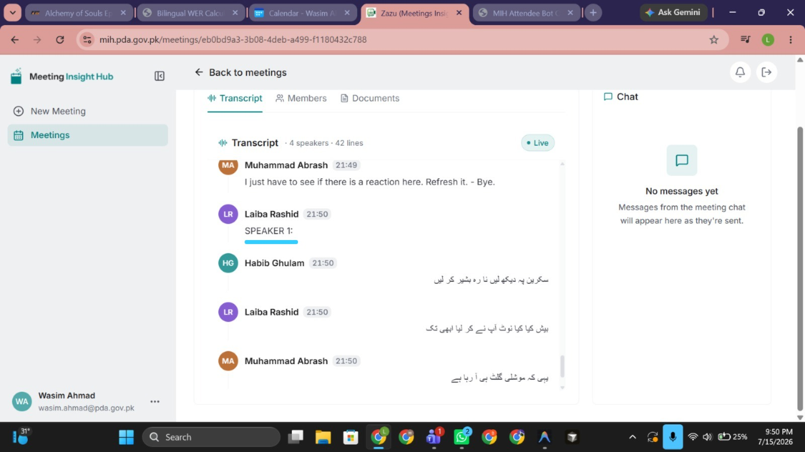
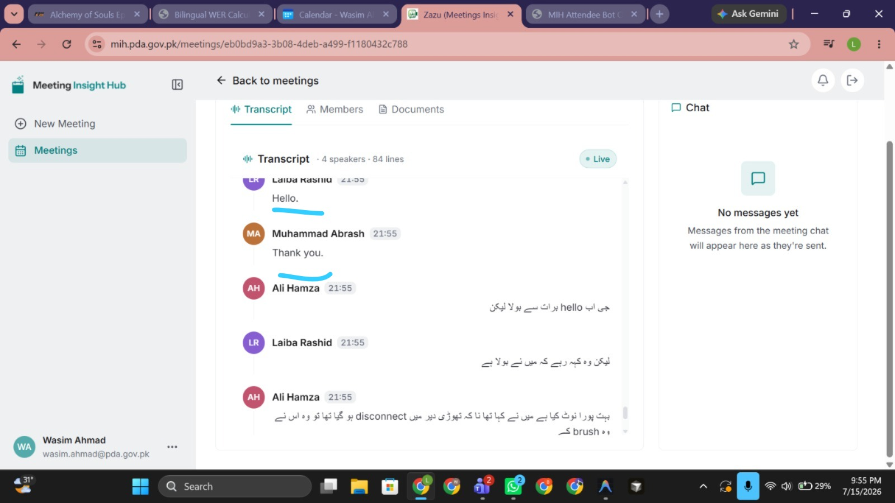
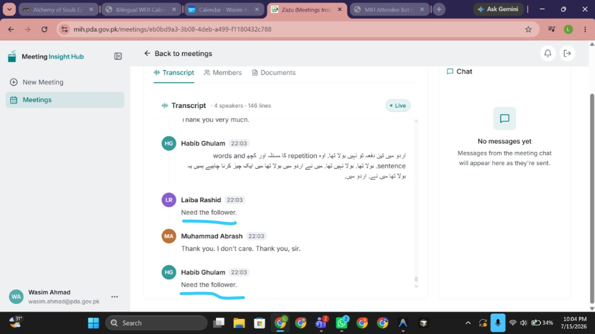
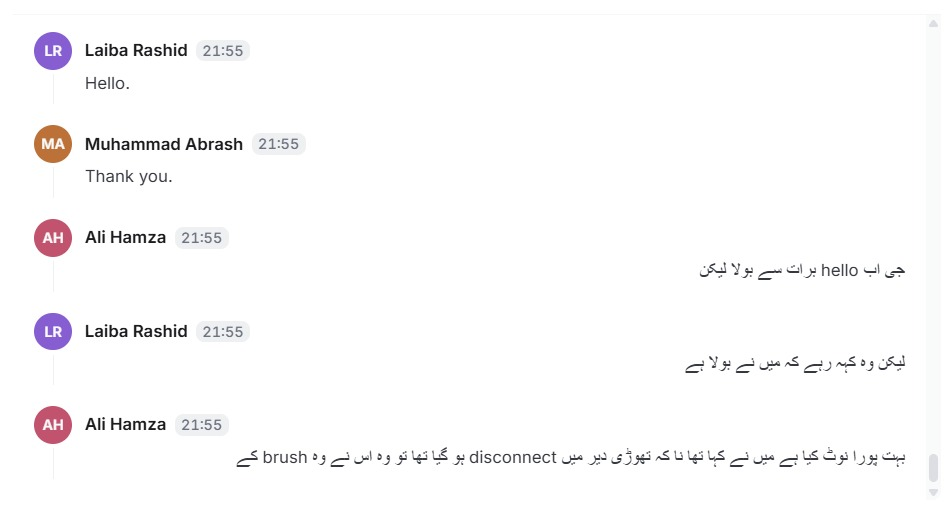

MIH Transcription Issues Report
Issues Observed During Group Meeting Transcription — 15/7/26
Meeting Link
Executive Summary
During transcription testing of the meeting above, five issues were observed. Each issue is documented below with supporting screenshots from the session.
Identified Issues
It Starts Repeating Sentences
The transcription starts repeating sentences again and again, even when the speaker did not repeat that content.
Adding Made-Up Words Not Spoken by the Speaker
The system inserts fabricated words and phrases that were not spoken by any speaker — for example “hello”, “Thank u”, and “Speaker 1:”.


/2c.jpg)


/2f.jpg)
Mixing Speakers’ Lines in a Group Meeting
For a group meeting, the system keeps mixing speakers’ lines — for example, it assigns Speaker 2’s line under Speaker 1’s name. In the screenshot below, a sentence spoken by Abrash is shown as spoken by Laiba.
/3a.jpg)
Translating Urdu into English and English into Urdu
The system keeps translating an Urdu sentence into English and an English sentence into Urdu, instead of transcribing the speech in the language that was actually spoken.
Adding Stray Punctuation in the Transcription
The system keeps inserting stray characters such as “-”, “.”, “,”, and “- -” in between the transcription.